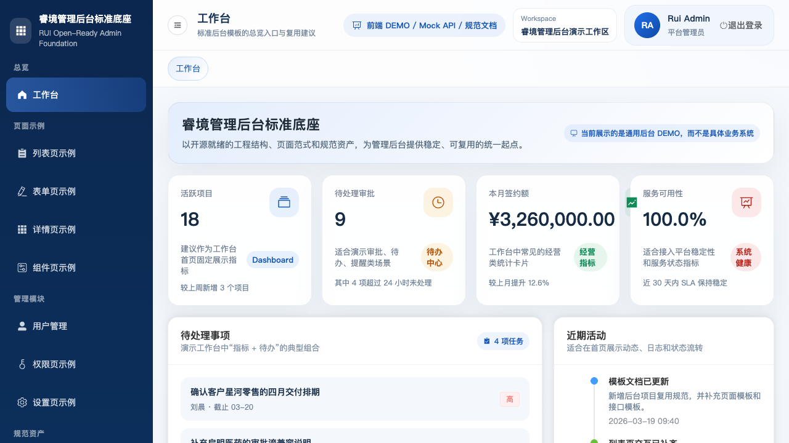
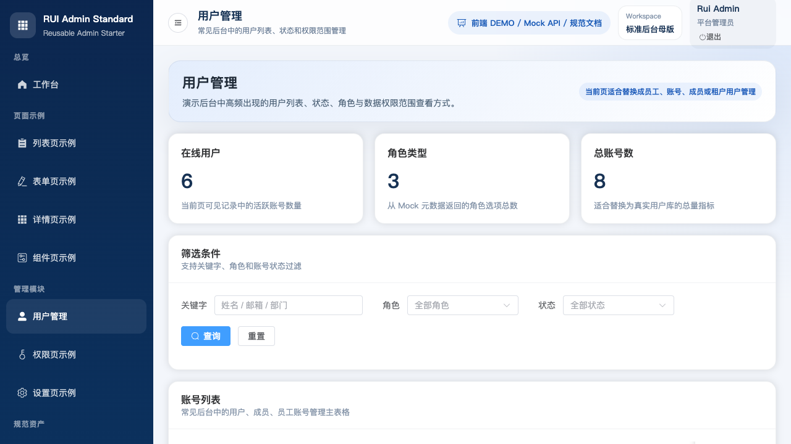
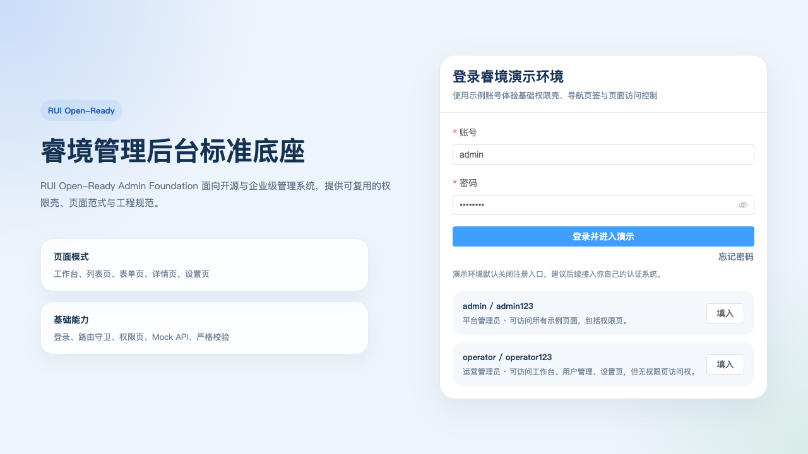
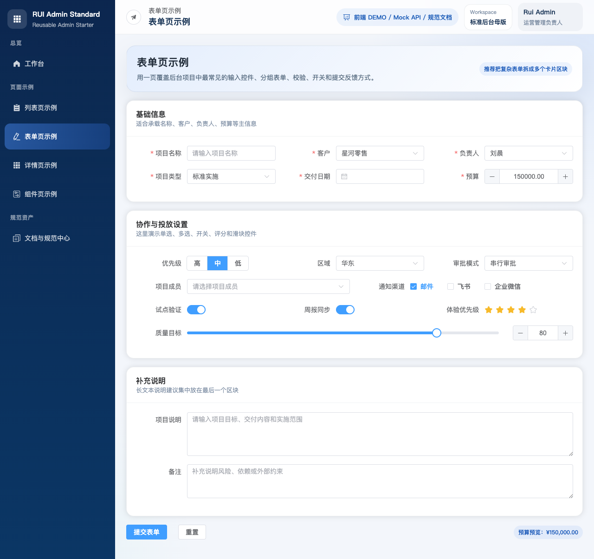
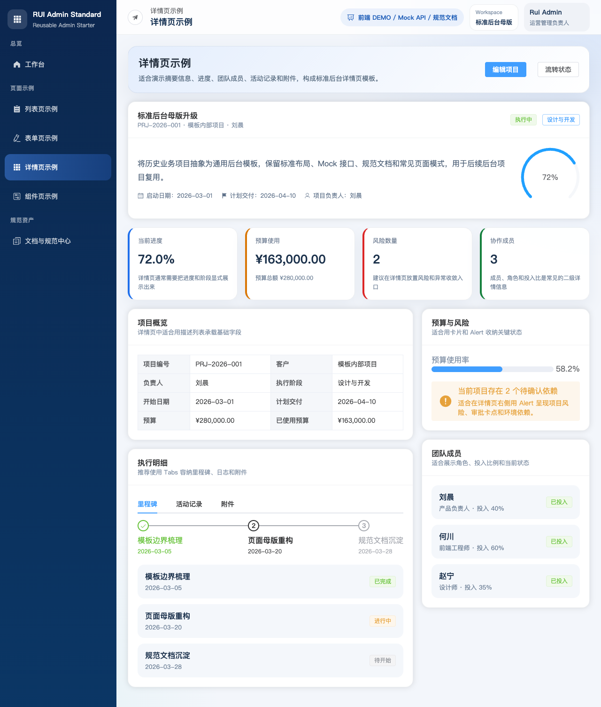

A full admin shell, not scattered widgets
Login, dashboard, list, form, detail, visualization, management, and docs screens are already shaped into reusable patterns.
Built for product managers, human teams, and AI agents
This is not a loose pile of UI components. It is a runnable admin foundation with page patterns, mock APIs, design rules, and delivery docs already in place, so a prototype can move from review to implementation with less friction.

Why this exists
It is meant for people who need to explain admin requirements clearly, demo them quickly, and then hand them off to engineers or AI agents without restarting from scratch. Product managers get more credible prototypes, engineers get a stable shell, and agents get a repo with clear structure, docs, and skills.
Login, dashboard, list, form, detail, visualization, management, and docs screens are already shaped into reusable patterns.
The `web + mock-server + docs` structure keeps UI, API simulation, and delivery context together so the demo layer does not drift away from implementation.
The repo explicitly allows AI-assisted reading, analysis, and modification, and it ships with project-level skills for product, development, and testing work.
What you get
Dashboard, list, form, detail, component showcase, and visualization pages are ready to reuse.
A stable Vue 3 + Vite + Element Plus implementation that is easy to extend.
Node.js native HTTP endpoints support early demos and frontend-backend separation.
Technical rules, design rules, API examples, requirement templates, and testing templates stay in repo.
License, code of conduct, support policy, issue templates, and PR templates are already included.
Requirement analysis, implementation, and regression planning can map directly to agent workflows.
Real screens
These screenshots come from the current demo and cover key admin screens such as dashboard, login, form, and detail views.




Best fit
Not the right start for
Get started
git clone git@github.com:vantang/RuiWebAdminStandardStarter.git
cd RuiWebAdminStandardStarter
npm run dev:start